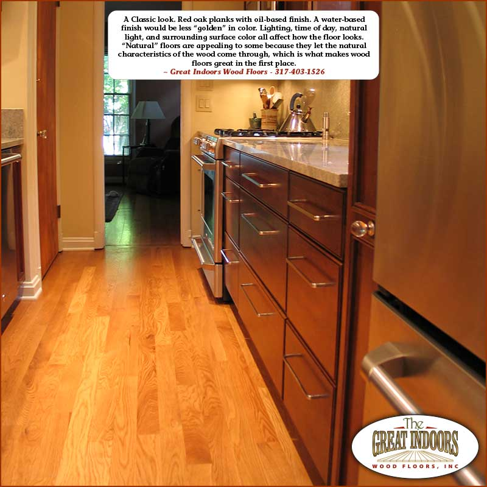
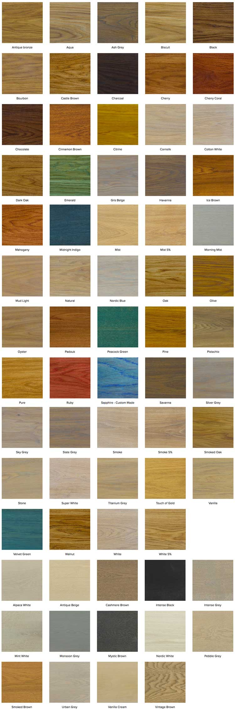

Oil-finished floors, naturally matte
Oil finish, sometimes called craft oil, has been a European favorite for years. The oil soaks into the wood itself, leaving a matte, vintage look with no plastic shine.

Protection that soaks in, not sits on top
Urethane coatings build an artificial barrier on top of the wood. Oil works differently: it impregnates the wood, protecting it deeper than just the surface.
Modern oil finishes are amazingly durable, easy to maintain, and easy to repair. Once the oil dries in the grain, there's no oily feel at all.
Two families to choose from: oil finishes and hard wax oil finishes. We'll help you pick the right one for how you live.
- Naturally matte. A non-glossy, vintage look, never plastic.
- Deeper protection. Oil penetrates the grain instead of coating the surface.
- The wood breathes. Oil enhances the wood's own defenses against moisture.
- Smooth to the touch. Once dried, just a well-protected wood floor.
How we oil a floor
The first application starts like any refinishing project, with one difference: we sand with a slightly rougher grit so the oil can soak in completely and deeply.
Step One Sand and prep
- Sand the floor to raw wood with a slightly rougher grit
- Clean every trace of dust before the oil goes down
- Water-popping can open the grain to absorb more oil and deepen the color
Step Two Oil and dry
- Apply the oil smoothly and let it dry, sometimes with an accelerator to speed things up
- The products we use are designed to cover in one coat
- Extra coats can build a deeper color when you want one
Easy to live with, easy to fix
Oiled floors ask very little of you, and when life leaves a mark, the fix is small.
Green Minimal VOCs
- Oil and hard wax oil finishes contain minimal if any volatile organic compounds
- A greener choice for the air inside your home
Repairs Spot fixes, not full sanding
- Damage or a worn traffic path? We sand and re-oil just that section
- The repair blends in invisibly, or nearly so, with no full refinish
Care Simple upkeep
- Vacuum, and mop with minimal water
- Scrub occasionally with a soap made for oiled floors: RMC Surface Care from Rubio Monocoat, or Bona Soap
- Skip all-purpose cleaners; they leave a dull residue and carry too much water

Craft oil in every color
There are many, many colors of craft oil. Rubio Monocoat is one of the leading makers of wood floor oils, and Bona is entering the market with some fine products too.
Keep in mind the wood itself shapes the final color. Red oak under a light oil still reads as red oak. Oils enhance, protect, and tint; only the very darkest colors hide the grain.
Oil pairs with every texture we offer. We can wire-brush, hand-scrape, or whitewash a floor, then finish it in oil.
Curious whether oil is right for your floors?
Call for a free consultation. We'll talk wood species, color, and whether an oil or hard wax oil finish fits the way you live.